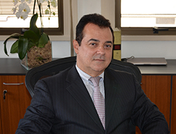
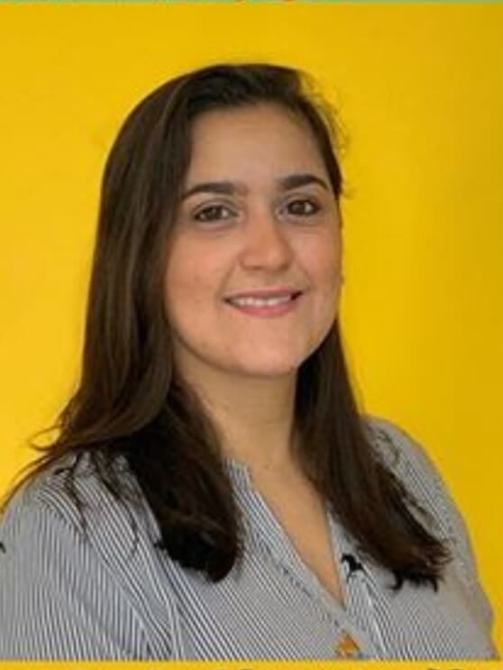
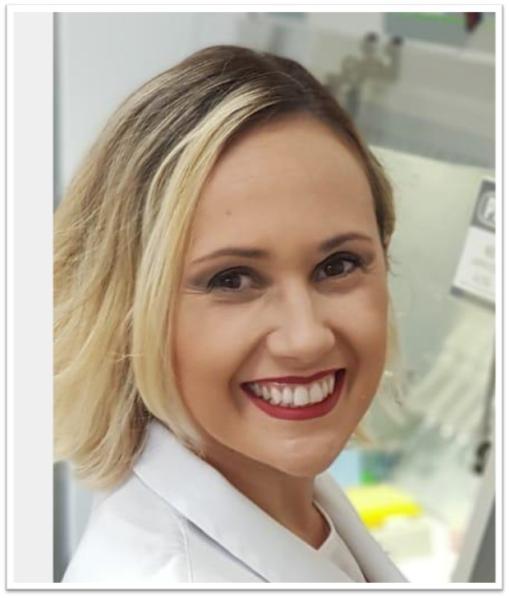
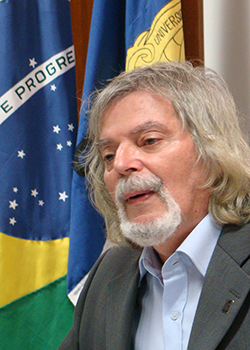

CONHEÇA NOSSOS
PALESTRANTES
Prof. Adalberto Vieyra
Diretor do CENABIO
UFRJ
UFRJ
Prof. Thaiane de Oliveira
Doutora em Comunicação Social - UFF
Prof. Jerson Lima
Presidente FAPERJ

Prof. Denise Pires
Reitora UFRJ
Prof. Wanderley de Souza
Academia Brasileira de Ciências
Prof. Tatiana Roque
Fórum Ciência e Cultura
UFRJ
UFRJ
Prof. Lúcio Caldas
UFRJ
Dra. Aline R. Vianna de Souza
@soapboxsciencebrasil
Dra. Juliana Cunha Vidal
@biofatos

Dra. Paula Mattos
@lip_ufrj

Prof. Eliezer Barreiro
Coordenador do INCT
Fármacos e Medicamentos
Fármacos e Medicamentos

Prof. Robson Cruz
Doutor em Psicologia
PUC – MG
PUC – MG
Prof. Lucia Abelha
Médica e psiquiatra
IESC - UFRJ
IESC - UFRJ
Prof. Susana Frases
Coordenadora PPG Biofísica
IBCCF – UFRJ
IBCCF – UFRJ
Dra. Rafaela Selem
Prof. Fundação Getúlio Vargas
Prof. Fernanda Cruz
Vencendora do prêmio L’Oréal “Para mulheres na Ciência” 2018